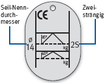
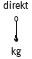
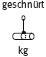
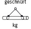
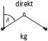
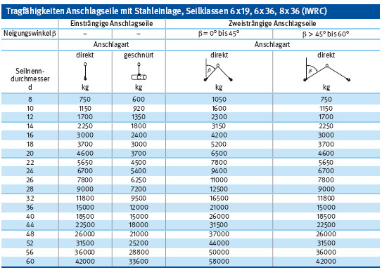

Fasereinlagen, Seilklassen 6x19 und 6x36 Tragfähigkeitstabellen
- Nur gekennzeichnete Anschlagseile verwenden (Seilmarken).
- Aufhängeglieder von Anschlagseilen müssen so groß sein, dass sie im Kranhaken frei beweglich sind.
- Mindestdurchmesser von Anschlagseilen aus Stahl: 8 mm.
- Seile nicht an Pressklemmen abknicken. Pressklemmen müssen als Flämisches Auge (Stahlpressklemme) hergestellt sein.
- Drahtseilklemmen sind nur für Abspannseile zugelassen.
- Seile mit Litzenbruch, Aufdoldungen, Knicken, Korbbildungen, Rostansätzen, Querschnittsveränderungen, Drahtbruchnestern usw. sofort aussondern und nicht mehr verwenden.
- Die Tragfähigkeiten von mehrsträngigen Anschlagseilen müssen auf einer am Aufhängeglied befestigten Plakette angegeben sein.
- Seile nicht über scharfe Kanten ziehen.
- Art, Umfang und Fristen erforderlicher Prüfungen festlegen (Gefährdungsbeurteilung) und einhalten, z. B.:
- arbeitstäglich auf ein wandfreien Zustand,
- nach Einsatzbedingungen, mind. 1 x jährlich durch eine „zur Prüfung befähigte Person“ (z. B. Sachkundiger).

Kennzeichnung von zweisträngigen Anschlagseilen
| Ablegereife von Drahtseilen bei sichtbaren Drahtbrüchen |
| Seilart |
Anzahl der sichtbaren Drahtbrüche bei Ablegereife auf einer Länge von |
| |
3 d |
6 d |
30 d |
| Litzenseil |
3 benachbarte Drähte einer Litze |
6 |
14 |
| Kabelschlagseil |
10 |
15 |
40 |
| Tragfähigkeiten Anschlagseile mit Fasereinlagen, Seilklassen 6x19 und 6x36 |
| |
Einsträngige Anschlagseile |
Zweisträngige Anschlagseile |
| Neigungswinkel β |
– |
– |
β = 0° bis 45° |
β > 45° bis 60° |
| |
Anschlagart |
Anschlagart |
| Seilnenndurchmesser d |
 |
 |
 |
 |
 |
 |
| 8 |
700 |
560 |
950 |
760 |
700 |
560 |
| 10 |
1000 |
800 |
1400 |
1100 |
1000 |
800 |
| 12 |
1500 |
1200 |
2100 |
1700 |
1500 |
1200 |
| 14 |
2000 |
1600 |
2800 |
2200 |
2000 |
1600 |
| 16 |
2700 |
2150 |
3800 |
3050 |
2700 |
2150 |
| 18 |
3150 |
2500 |
4400 |
3500 |
3150 |
2500 |
| 20 |
4000 |
3200 |
5600 |
4500 |
4000 |
3200 |
| 22 |
5000 |
4000 |
7000 |
5600 |
5000 |
4000 |
| 24 |
6300 |
5000 |
8800 |
7000 |
6300 |
5000 |
| 26 |
7000 |
5600 |
9800 |
7800 |
7000 |
5600 |
| 28 |
8000 |
6400 |
11200 |
9000 |
8000 |
6400 |
| 32 |
11000 |
8800 |
15000 |
12300 |
11000 |
8800 |
| 36 |
14000 |
11200 |
19000 |
15500 |
14000 |
11200 |
| 40 |
17000 |
13600 |
23500 |
19000 |
17000 |
13600 |
| 44 |
21000 |
16800 |
29000 |
23500 |
21000 |
16800 |
| 48 |
25000 |
20000 |
35000 |
28000 |
25000 |
20000 |
| 52 |
29000 |
2300 |
40000 |
32000 |
29000 |
23000 |
| 56 |
33500 |
26800 |
47000 |
37500 |
33500 |
26800 |
| 60 |
39000 |
31000 |
54000 |
43500 |
39000 |
31000 |
Stahleinlage, Seilklassen 6x19, 6x36 und 8x36 Tragfähigkeitstabellen
- Nur gekennzeichnete Anschlagseile verwenden (Seilmarken).
- Aufhängeglieder von Anschlagseilen müssen so groß sein, dass sie im Kranhaken frei beweglich sind.
- Mindestdurchmesser von Anschlagseilen aus Stahl: 8 mm.
- Seile nicht an Pressklemmen abknicken.
- Nur genormte Seile und Seilendverbindungen verwenden.
- Drahtseilklemmen sind nur für Abspannseile zugelassen.
- Seile mit Litzenbruch, Aufdoldungen, Knicken, Korbbildungen, Rostansätzen, Querschnittsveränderungen, Drahtbruchnestern usw. sofort aussondern und nicht mehr verwenden.
- Die Tragfähigkeiten von mehrsträngigen Anschlagseilen müssen auf einer am Aufhängeglied befestigten Plakette angegeben sein.
- Art, Umfang und Fristen erforderlicher Prüfungen festlegen (Gefährdungsbeurteilung) und einhalten, z. B.:
- arbeitstäglich auf ein wandfreien Zustand,
- nach Einsatzbedingungen, mind. 1 x jährlich durch eine „zur Prüfungbefähigte Person“ (z. B. Sachkundiger).
Kennzeichnung von zweisträngigen Anschlagseilen
| Ablegereife von Drahtseilen bei sichtbaren Drahtbrüchen |
| Seilart |
Anzahl der sichtbaren Drahtbrüche bei Ablegereife auf einer Länge von |
| |
3 d |
6 d |
30 d |
| Litzenseil |
3 benachbarte Drähte einer Litze |
6 |
14 |
| Kabelschlagseil |
10 |
15 |
40 |

07/2015